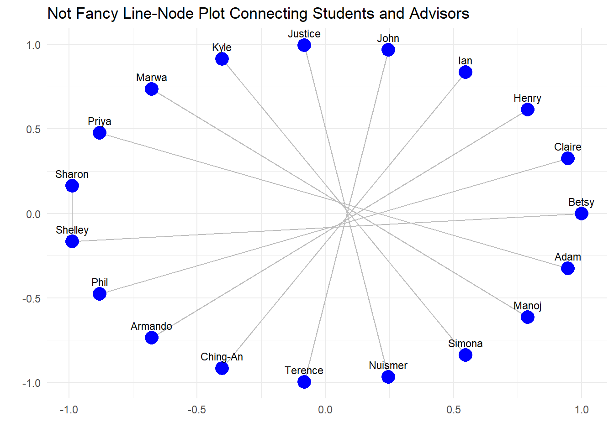

# Set a CRAN mirrorchooseCRANmirror(graphics =FALSE, ind =1) # This sets the first CRAN mirror from the listinstall.packages("igraph")
package 'igraph' successfully unpacked and MD5 sums checked
The downloaded binary packages are in
C:\Users\betsy\AppData\Local\Temp\Rtmp0Gi3ho\downloaded_packages
Code
# Load the necessary librarylibrary(ggplot2)# Define the edges based on the provided dataedges <-data.frame(from =c("Betsy", "Claire", "Henry", "Ian", "John", "Justice", "Kyle", "Marwa", "Priya", "Sharon"),to =c("Shelley", "Phil", "Armando", "Ching-An", "Terence", "Nuismer", "Simona", "Manoj", "Adam", "Shelley"),connected =c(TRUE, TRUE, TRUE, TRUE, TRUE, TRUE, TRUE, TRUE, TRUE, TRUE))# Extract unique nodesnodes <-unique(c(edges$from, edges$to))# Assign positions for plotting (e.g., in a circle for simplicity)angles <-seq(0, 2*pi, length.out =length(nodes) +1)node_positions <-data.frame(name = nodes,x =cos(angles[-length(angles)]),y =sin(angles[-length(angles)]))# Merge node positions with edge dataedges <-merge(edges, node_positions, by.x ="from", by.y ="name", suffixes =c(".from", ".to"))edges <-merge(edges, node_positions, by.x ="to", by.y ="name", suffixes =c(".to", ".from"))# Create the plotp <-ggplot() +# Add edgesgeom_segment(data = edges, aes(x = x.from, y = y.from, xend = x.to, yend = y.to), color ="grey") +# Add nodesgeom_point(data = node_positions, aes(x = x, y = y), size =5, color ="blue") +# Add labelsgeom_text(data = node_positions, aes(x = x, y = y, label = name), vjust =-1, size =3) +theme_minimal() +labs(title ="Not Fancy Line-Node Plot Connecting Students and Advisors", x ="", y ="")# Print the plotprint(p)

Code
# Load necessary libraries# Load necessary libraries# Load necessary libraries# Load necessary librarieslibrary(igraph)library(ggraph)library(dplyr)# Create the data frame with unique names, including Sharondata <-data.frame(name =c("Betsy", "Claire", "Henry", "Ian", "John", "Kyle", "Lucas", "Marwa", "Priya", "Sharon", "Justice","Adam", "Armando", "Barrie","Manoj", "Phil", "Scott", "Shelley1", "Shelley2", "Simona", "Terence"),department =c("FCS", "AVFS", "EPPN", "Engineering", "Computer Science", "CNR", "EPPN", "Politics and Philosophy", "Biology", "FCS", "Biology", "Biology", "EPPN", "Biology", "Politics and Philosophy", "AVFS", "Biology", "FCS", "FCS", "CNR", "Computer Science"),rank =c("Graduate", "Graduate", "Graduate", "Graduate", "Graduate", "Graduate", "Graduate", "Graduate", "Graduate", "Graduate", "Graduate", "Professor", "Professor", "Professor", "Professor", "Professor", "Professor", "Professor", "Professor", "Professor", "Professor"))# Create edges by connecting nodes in the same departmentedges <-expand.grid(from = data$name, to = data$name) %>%left_join(data, by =c("from"="name")) %>%left_join(data, by =c("to"="name"), suffix =c(".from", ".to")) %>%filter(department.from == department.to, from != to)# Create a graph objectgraph <-graph_from_data_frame(edges, vertices = data, directed =FALSE)# Plot with ggraphggraph(graph, layout ="fr") +# 'fr' is a force-directed layoutgeom_edge_link(aes(color = rank.from), size =1) +geom_node_point(aes(color = department), size =5) +geom_node_text(aes(label = name), repel =TRUE, size =3) +scale_edge_color_manual(values =c("Graduate"="grey", "Professor"="red")) +scale_color_brewer(palette ="Set3") +theme_minimal() +labs(title ="Line-Node Plot by Department and Rank")